El Chevrolet Camaro es un auto deportivo producido por el fabricante estadounidense Chevrolet GM. Se clasifica como un pony car y en algunas versiones también como un muscle car. El Camaro surgió como la respuesta de General Motors a su rival más digno durante esta época: el Ford Mustang.
Historia
En plena era de los "pony cars", Chevrolet presentó este modelo en dos versiones: el camaro Rally Sport (RS) y el camaro Super Sport (SS). Este último contaba con un V8 de 5.7 litros, y otro motor opcional de 6,5 litros con 396 plgs³, estaban hechos para la clase de cliente estadounidense apasionado por la velocidad, con la idea de "correr en el verano y guardarlo en el invierno", ya que se fabricaba en versión descapotable como en coupé.
Esta tradición jamás continuó a pesar de la gran decadencia a mediados de los años 1970, con la subida del precio de los combustibles. Este modelo se hizo famoso en las carreras de Trans-Am y la National Hot Rod Association.
Primera Generación (1967-1969)
El Camaro fue mostrado por primera vez en un preestreno para la prensa en Detroit, Michigan , el 12 de septiembre de 1966, y más tarde en Los Angeles, California. El Camaro estuvo oficialmente a la venta en los concesionarios el 29 de septiembre de 1966. Fue presentado como el modelo del año en 1967, compartiendo el diseño del bastidor delantero / semi-monocasco con el Chevy Nova de 1968. Estaban disponibles casi 85 opciones de fábrica y 40 opciones de concesionario, incluyendo tres paquetes principales.
El RS (Rally-Sport) es un paquete de apariencia más deportiva que incluía faros ocultos, luces traseras modificadas, emblemas RS, y moldura cromada baja lateral. Estaba disponible en todos los modelos.
El paquete SS incluyó un motor V8 de 350 plgs³ (5,7 L) con 288 hp (212 kW), y el 396 plgs³ (6.5 L) V8 con 330 hp (243 kW) del bloque grande similar al Chevrolet Corvette pero con menor cilindrada también estaba disponible. El SS ofrecido tomas de aire en el capó no funcionales, franjas laterales especiales e insignias SS en la parrilla guardabarros delanteros, tapa de la gasolina y botón de la bocina. Era posible pedir tanto el SS y RS para recibir un Camaro RS/SS. En 1967, un Camaro RS/SS convertible con un motor de 396 estableció el paso de la carrera de las 500 millas de Indianápolis.
El Z/28 fue presentado en diciembre de 1966 para el año modelo 1967. Este paquete opcional no fue mencionado en ninguna literatura de ventas, por lo que era desconocido para la mayoría de los compradores. La opción Z/28 requirió frenos de disco delanteros y una transmisión manual de 4 velocidades Muncie. El Z/28 ofreció un V8 de 302 pulgadas cúbicas (4,9 L) de bloque pequeño, cigüeñal de 3" con 4" de diámetro, un colector de admisión de aluminio, y un carburador de cuádruple cuerpo Holley 780 CFM con secundarias por vacío.
En 1969 se presentó con una nueva plataforma "F-Body" de tracción trasera. Estaba disponible como un coupé de 2 puertas o convertible con asientos 2 +2, y una opción de 230 plgs³ (3,8 L), 250 plgs³ (4,1 L), un 6 en línea o 302 plgs³ (4,9 L), 307 plgs³ (5,0 L), 327 plgs³ (5,4 L), 350 plgs³ (5,7 L ), 396 plgs³ (6,5 L) 427 plgs³ (7,0 L).1
Chevrolet Camaro 1969 Convertible RS/SS Indianapolis 500 Pace Car
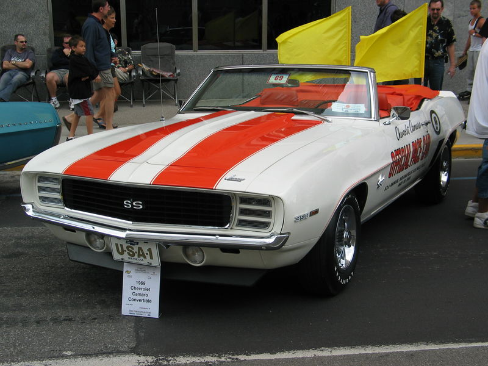Chevrolet Camaro SS 396 1967
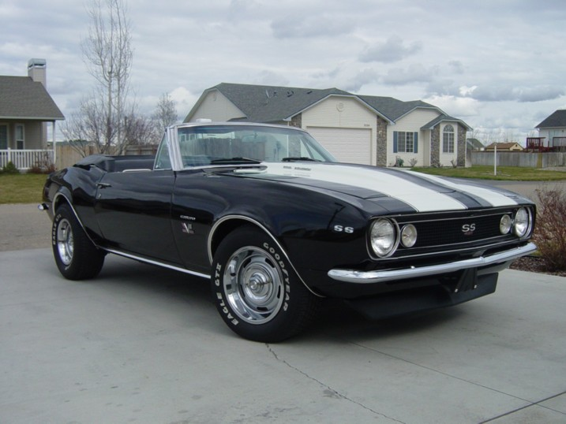Chevrolet Camaro 327 1968
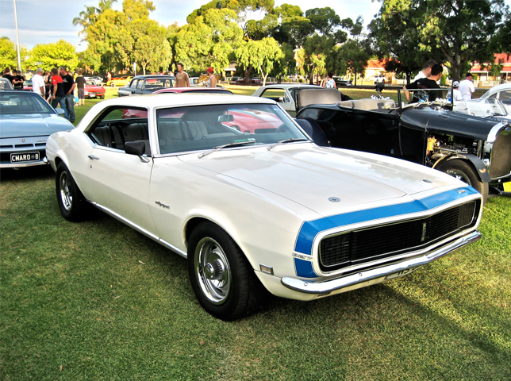Segunda Generación (1970-1981)
Introducido en febrero de 1970, se adoptó una carrocería más perfilada y deportiva que los modelos clásicos para atraer a los compradores modernos. El 1970½ Camaro fue de nuevo el Z/28 «LT-1» de alta compresión 350, ahora impulsado por un 360 caballos de fuerza (268.5 kW). A partir de 1973 debido al estallido de la crisis del petróleo en EE.UU. en 1973, Chevrolet se marcó como tope de potencia máxima motores de 5,7 litros con potencia de 250 CV (184 kW) en los modelos que se comercializaron a partir de ese año. El básico de 1978 venía con un motor de 157 CV (114 kW) de potencia.
El Camaro de 1972 sufrió dos contratiempos mayores. La huelga de UAW en la planta de montaje de General Motors en Norwood la producción fue interrumpido por 174 días y 1.100 Camaros incompletos tuvieron que ser desechado porque no podían cumplir con los estándares federales de seguridad de parachoques de 1973. Algunos en General Motors consideraron seriamente abandonar el Camaro y Firebird en conjunto.
El Camaro de 1972 sufrió dos contratiempos mayores. La huelga de UAW en la planta de montaje de General Motors en Norwood la producción fue interrumpido por 174 días y 1.100 Camaros incompletos tuvieron que ser desechado porque no podían cumplir con los estándares federales de seguridad de parachoques de 1973. Algunos en General Motors consideraron seriamente abandonar el Camaro y Firebird en conjunto.
El paquete Z28 fue reintroducido a mediados de año 1977 y, en gran parte como respuesta a la demanda entusiasta de dominar por primera vez al Ford Mustang, así como el éxito de su compañero de cuadra corporativa, el Pontiac Trans Am.
Los modelos Z28 1980 y 1981 incluyen una toma de aire de inducción con una puerta de admisión que abren el acelerador a fondo.
Chevrolet Camaro 1970½ Z/28
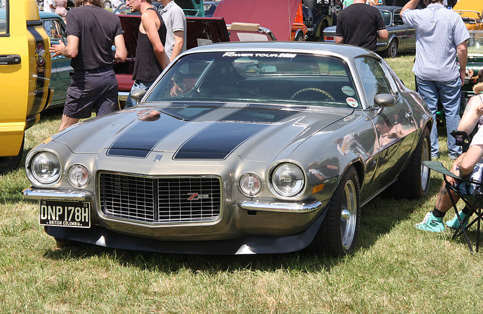Chevrolet Camaro LT350 1973
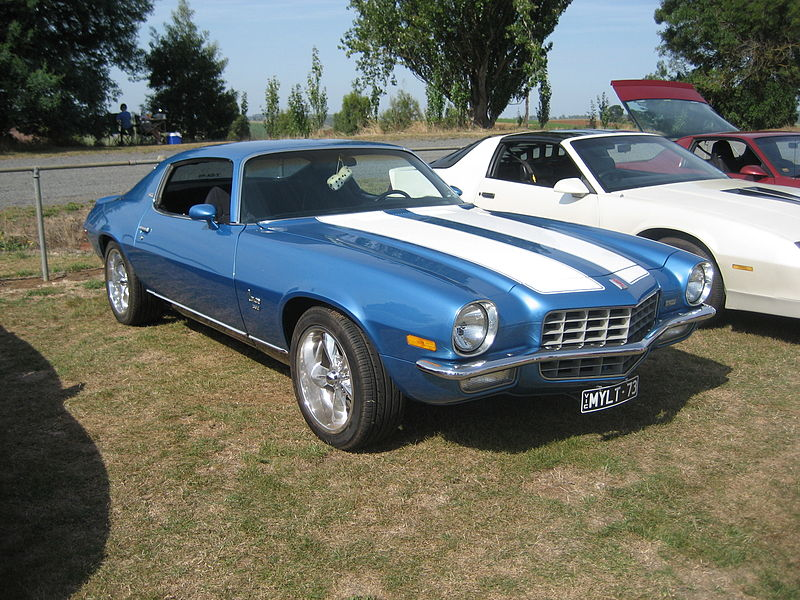Chevrolet Camaro 1976
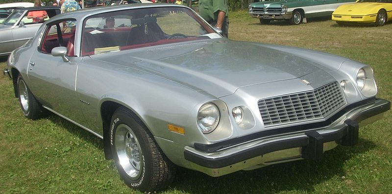Tercera Generación (1982-1992)
Durante 1982 y 1993 el Camaro se rediseña adoptando una apariencia similar a la presente, con un frontal en forma de cuña y un grupo óptico profundizado en la parrilla. Gracias al auge económico de principio de los 90, los nuevos modelos volvieron a ofrecer la opción de la versión cabrio abierta. Los motores se empiezan a optimizar buscando una reducción del consumo, procurando no perder la energía y potencia por los que se hizo famoso este modelo en la época de los pony cars. En esta generación se ofrecían motores de 2,5.Su aspecto hizo que fuera el muscle car más codiciado de los tiempos.Además, Chevy pretendía reafirmar su apuesta al crear el modelo que superara al Dodge Challenger o Charger, el Ford Mustang y en conjunto con el corvette.
Sólo para el año 1987, el kit de doble turbo-era más bien un-una opción de opción instalada por el concesionario de producción regular. Esto incluye un tacómetro de carreras, un kit de doble turbo modificado basado en GNX de Buick y 560 caballos de fuerza. Luces traseras luces apagadas era una opción exclusiva para el año 1987 el modelo twin-turbo IROC-Z Camaro. Sólo tres coches tenían el kit de doble turbo. Chevrolet asegura un tiempo de 0-60 mph de 4,3 segundos, un tiempo de 0 a 100 de 9,3, y un cuarto de milla de 12,29 segundos en 117 millas por hora. Esto fue antes de la 1183-CV SSC Ultimate Aero TT se convirtió en una cosa.
Chevrolet Camaro IROC-Z 1986
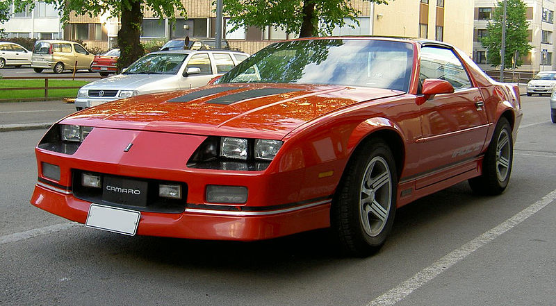Chevrolet Camaro IROC-Z 1986
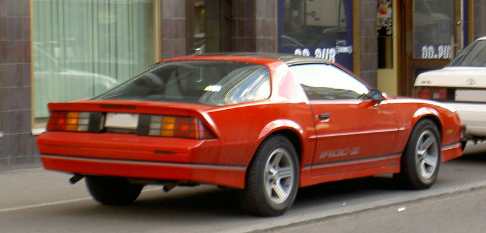Cuarta Generación (1993-2002)
Los modelos que salieron a partir de 1993 hasta 2002, continuaban persiguiendo los objetivos marcados durante la tercera generación. Los modelos presentaban una cuña más marcada, dando la sensación de flecha. El modelo se situaba en los 4,90 metros. El modelo básico salía con un motor de 3,4 litros y 160 CV (118 KW), sin embargo se mantuvo la versión Z/28, que ofrecía la máxima potencia soportada de fábrica por el modelo que al principio del 1993, se había reducido bastante respecto con modelos anteriores, quedándose en un motor de 5,7 litros, 275 CV (202 kW). Posteriormente en una re-edición del modelo Z/28 se montó en el Camaro un motor de aluminio ligero que le confería una potencia de 288 CV (212 kW).
Chevrolet Camaro 1999, de la Patrulla de carretera de California

Chevrolet Camaro SS350 2002
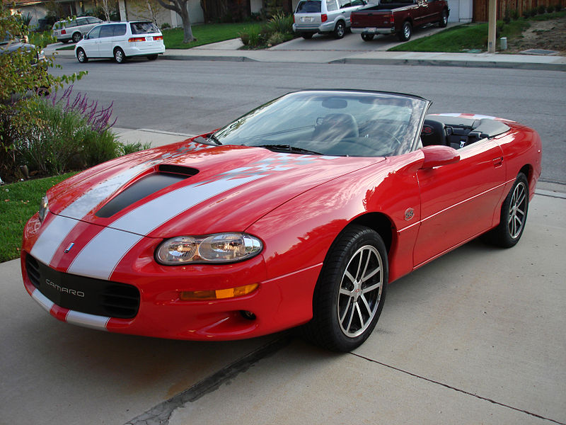Chevrolet Camaro SS350 2002
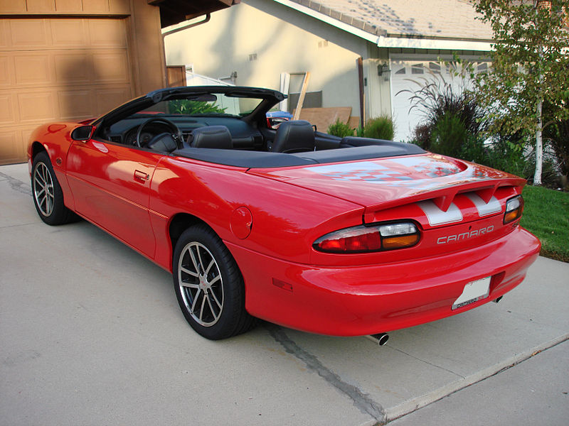Quinta Generación (2010-2015)
Durante 2001 la producción del Camaro se detuvo. Durante ese tiempo Chevrolet buscaba una ruptura de concepto, buscando la manera de sorprender con un modelo puramente al estilo americano que pudiera despertar las pasiones deportivas de un mundo entero. La espera fue larga, siete años donde únicamente se pudieron entrever algunos concept car. En 2006 salió a la luz, el nuevo Chevrolet Camaro que se adaptaba a su manera a los nuevos mercados y exigencias de los clientes, equipando de serie, por ejemplo un conjunto de airbags y un sistema de control de tracción, ESP. La motorización incluía, en su gama más alta, un V8 con cilindros desconectables de 6,1 litros que le otorgaban una potencia de 426 CV (313 kW). Mientras que también era posible optar, por una opción más prudente pero no por ello despreciable, de un motor de 304 CV (224 KW) de 6 cilindros.Su velocidad máxima es de 300km/h.2
Chevrolet Camaro 2010 RS "rally-sport"
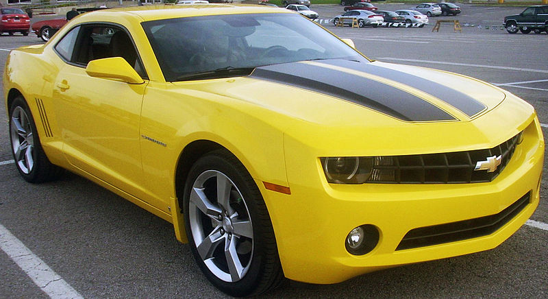Chevrolet Camaro 2011
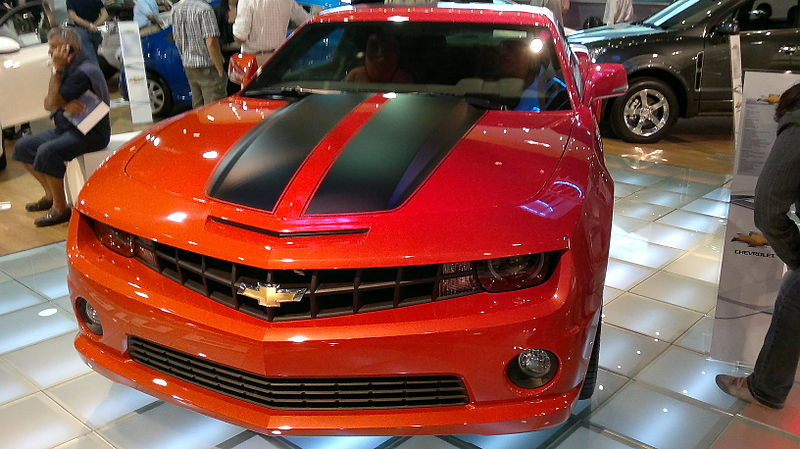Camaro ZL1
Para los fanáticos, la sigla ZL1 que evoca recuerdos imborrables, pues llevan a las raíces de Camaro, allá por el año 1969. En ese año, bajo el código de producción ZL1, se construyeron 69 unidades. Hoy, homenajeando a ese mítico modelo que se caracterizaba por tener un motor completamente de aluminio, nace el nuevo ZL1. La resurrección de una leyenda. El nuevo deportivo, el cual fue candidato de la prensa especializada de Chile a Deportivo Premium del Año, fue creado para ser utilizado en el día a día, pero con la mirada puesta en las pistas de competición, de ahí que disponga del exclusivo sistema Performance Traction Management (PTM) que ofrece 5 modos de manejo, y que integra los sistemas Magnetic Ride Control (con tres tipos de calibración –Tour, Sport y Track- adaptables según el camino), Launch Control, Traction Control y Active Handling. En conjunto, ofrecen mejor estabilidad y desempeño al momento de exprimir sus capacidades.
Estos sistemas se complementan con el poderoso motor V8 supercargado de 6.2 litros fabricado íntegramente de aluminio, tal como el modelo original de fines de los 70. Desde este bloque, asociado a una caja automática, se desarrollan 580 caballos de fuerza, con un extraordinario torque de 754 Nm. No extraña entonces las cifras de aceleración, entre las que destacan el paso de 0 a 100 km/h en 3,9 segundos, la velocidad máxima de 292 km/h y los 7 minutos 41 segundos y 27 centésimas que demoró en recorrer el circuito de Nürburgring. Pero tanta potencia también debe ir asociada a seguridad, por lo mismo, cuenta con frenos Brembo con cálipers de seis (adelante) y cuatro pistones (atrás), los que permiten tolerar frenadas a altas velocidades. En números, si el vehículo se mueve a 100 km/h y se frena en seco, el tramo que recorrerá el ZL1 antes de detenerse por completo es de 38 metros.
Chevrolet Camaro ZL1 2012
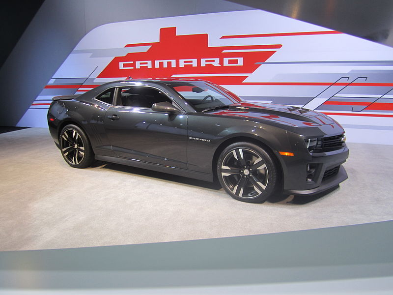Camaro Z/28
Con increíble apariencia, el nuevo «Chevrolet Camaro Z/28» 2014, ha surgido este año como uno de los mejores coches deportivos. Más rápido que el ZL1 por tres segundos «en la pista», el nuevo Z/28 cuenta con una excelente combinación de bajo peso y poderoso motor.
El nuevo Camaro Z/28 cuenta con un motor LS7 V8 7.0L, capaz de producir 500 caballos de fuerza, 470 libras-pie de troque, y una transmisión manual Tremec TR6060 de 6-velocidades, que promete velocidad máxima de 300 km/h. El Chevrolet Camaro Z/28 2014 cuenta con mejor funcionamiento en las curvas, excelente agarre y super potencia de frenado a alta velocidad. Este modelo ha aparecido también como Camaro "Especial" De Hot Wheels con el nombre: 2013 Hot Wheels Chevy Camaro Special Edition nombre de este auto en Especial De Hot wheels.
Camaro Z28
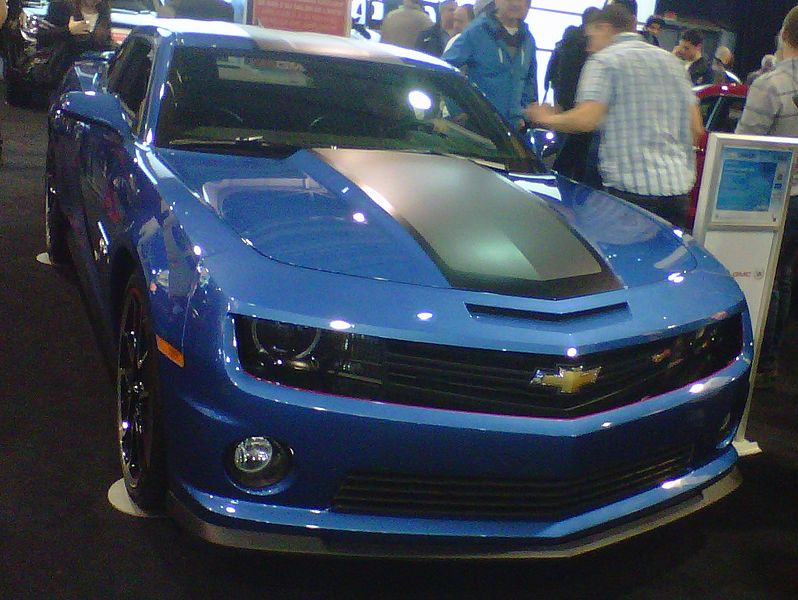Sexta Generación (2016 - presente)
El 16 de mayo de 2015, Chevrolet presentó el Camaro sexta generación en el parque Belle Isle en Detroit, Michigan. El lanzamiento, con Camaros generación anterior en la pantalla, coincidió con próximo 50 cumpleaños del vehículo.
Las ventas de Camaro sexta generación comenzarán a finales de 2015 y se ofrece en LT y SS modelos construidos en la plataforma de GM Alfa en Lansing Grand River Asamblea en Michigan. La plataforma A es utilizado actualmente por el Cadillac ATS. El Camaro 2016 tendrá un peso de 200 libras (91 kg) menos que su predecesor. Más del 70% de los componentes arquitectónicos de la sexta generación es única para el coche y no se comparten con cualquier otro producto actual GM.
Tendrá disponible motores: El Camaro contara con un nuevo motor un 2.1 litros turbo de cuatro cilindros en línea que produce 276 caballos de fuerza (205 kW; 279 PS), un nuevo V6 de 3.6 litros que genera 335 caballos de fuerza (250 kW; 340 PS), mientras que el modelo SS cuenta con el V8 de 6.2 litros con 455 caballos de potencia (339 kW; 461 PS), y las transmisiones son una manual de seis velocidades o una automática de ocho velocidades. El motor V8 tiene la posibilidad de funcionamiento económico en 4 cilindros.El V8 es capas de llegar a 280 kmh limitado